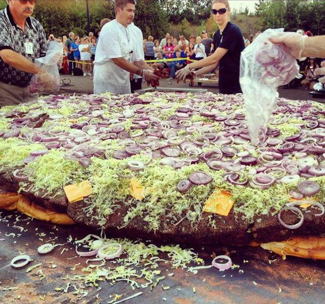

Nous servons nos délicieux burgers à base de produits frais de saison provenant de producteurs régionaux ainsi que certains produits locaux tels que du poisson et des morceaux de poulet entier. Vous pouvez déguster de délicieuses
frites faites maison. Tous les plats sont préparés selon les recettes de notre maître restaurateur. Notre menu se compose de plats bien planifiés et bien exécutés, qui sont créés sur place à la perfection. Nous sommes
passionnés par la nourriture et les mets de qualités.
Il est possible de manger sur place ou à emporter. Nous disposons d'une agréable terrasse.
À Voorthuizen, aux Pays-Bas, Robbert Jan de Veen, chef du restaurant De Daltons, a décidé de marquer son nom au livre Guiness des records. Selon les informations de 7sur7, Robbert propose le burger le plus cher du monde. Si les clients veulent le déguster, ils devront débourser... 5.000 euros ! Mais ce n’est pas tout, ils devront également payer un acompte de 750 euros.
Mais pourquoi un tel prix ? Le burger est composé de nombreux ingrédients, tous plus luxueux les uns que les autres : pain maison amélioré au champagne et recouvert d’or comestible, boeuf wagyu, caviar béluga, truffes, sauce barbecue améliorée au whisky Macallan et café Kopi Iuwak !
Le premier exemplaire de ce burger « le plus cher du monde » a été mangé par le président de la fédération Horeca des Pays-Bas et le montant a été reversé à une banque alimentaire.
L'article est disponible sur ce lien
Un bar australien a revendiqué le record du plus gros hamburger du monde, après avoir passé douze heures à faire cuire un steak haché de 81 kg, que quatre personnes se chargeaient de retourner.
Ce coupe-faim se compose également de 120 œufs, 150 tranches de fromage, 1,5 kg de betteraves, 2,5 kg de tomates et presque 2 kg de laitue, le tout assaisonné d’une sauce spéciale, entre deux pains au sésame géant. Il a été dégusté par les employés du restaurant.
Avec un poids total de 90 kg, le hamburger du couple de restaurateurs, Joe et Iman El Adjouz, dépasse de 6 kg le précédent record, détenu par un restaurant du Michigan.
“Retourner le steak était la principale difficulté, mais tout s’est bien passé. Mon mari a conçu un support spécial pour la viande, deux plaques de métal verrouillées ensemble, une de chaque côté, et ils l’ont retourné comme ça”, a expliqué Iman El Adjouz à Reuters.
Pour que le record puisse être homologué, le hamburger a été inclus dans le menu du restaurant pour l’année prochaine. Les amateurs devront débourser environ 1.500 dollars australiens (1.025 euros). Et probablement s’armer de patience.
Amy Pyett. Gregory Schwartz pour le service français.
L'article est disponible sur ce lien

Le record du monde du hamburger le plus gros du monde a été battu dans le Minnesota, aux Etats-Unis. En effet, c'est le Black Bear Casino Resort qui avait organisé l'événement en prenant bien sûr le soin d'inviter un représentant du Guinness des Records afin que celui-ci soit validé, explique la version britannique de Metro.
Au final, c'est un sandwich de 913 kg que cette équipe a réussi à cuisiner, battant ainsi le précédent record du monde qui était de 400 kg. La plus grande difficulté de cet exercice n'était pas de réunir tous les ingrédients, mais de réussir à cuire la viande ainsi que le pain. Les cuisiniers ont donc construit un four sur mesure pour ce monstrueux hamburger. Pour retourner la viande et le pain pendant la cuisson, il leur a fallu utiliser une grue.
Au cours de ce gigantesque record, les organisateurs ont utilisé 27 kg de bacon, 22 kg de laitue ainsi que 18 kg de fromage et de cornichons pour fabriquer ces 4.1 millions de calories. Le juge, Philip Robertson, avant de valider ce record a dû goûter à cet hamburger démesuré. Il a même précisé que ce dernier était délicieux, bien que ce ne soit pas un critère de validation. Les spectateurs ont également pu se partager ce sandwich à la fin du spectacle.
L'article est disponible sur ce lien
All contacts informations is in the bottom of the site.